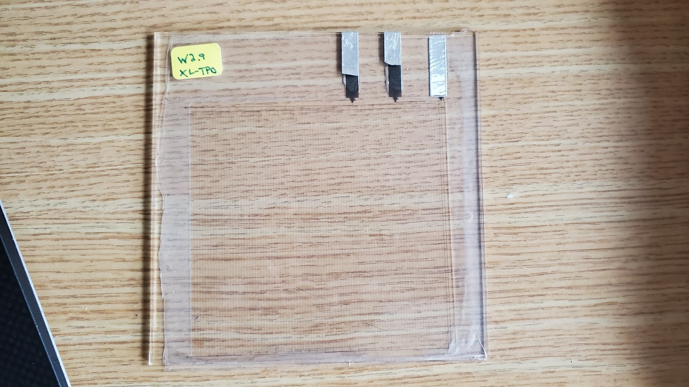
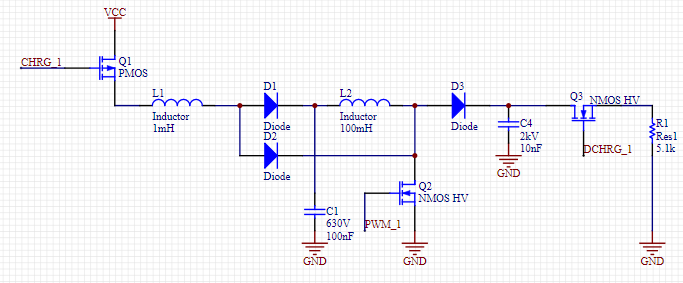
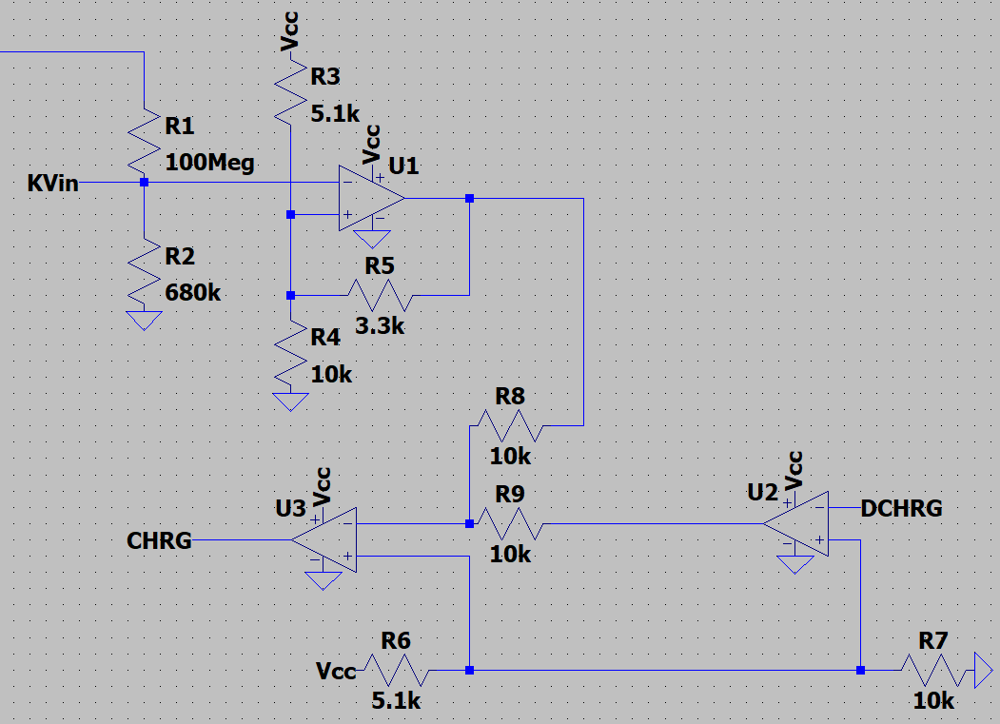
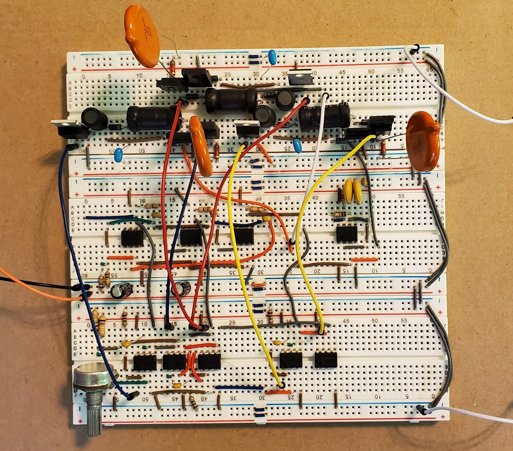
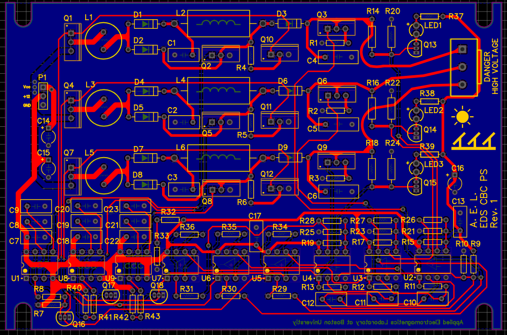
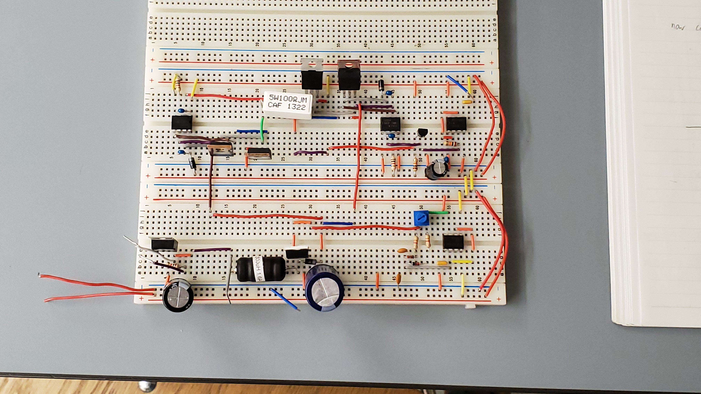
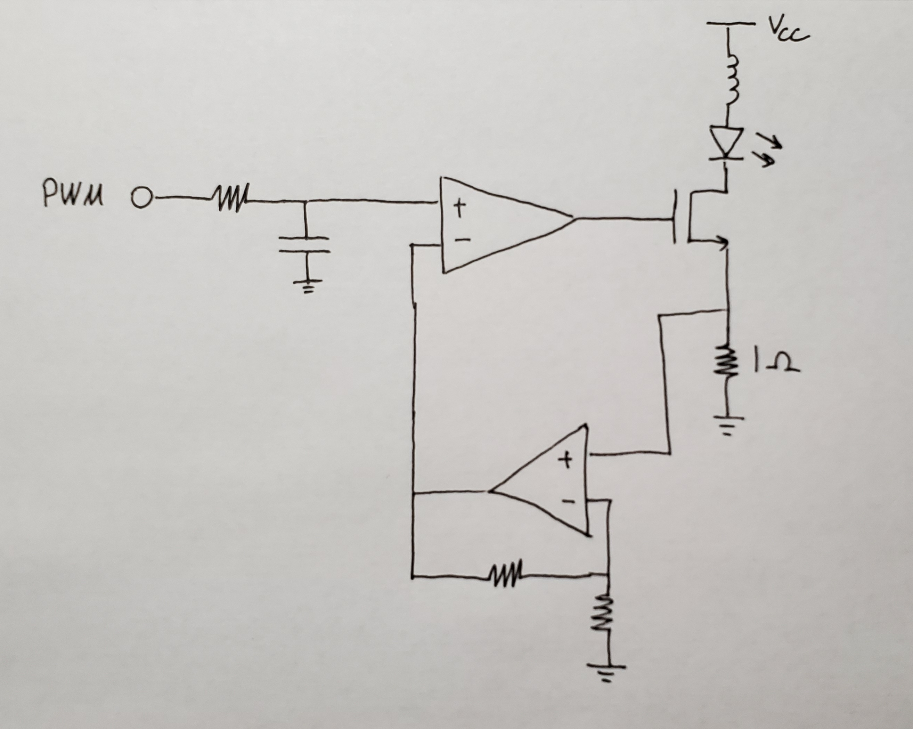

Projects
Self-Cleaning Solar Panel Power Supply and Driver: Summer 2020
During the Coronavirus lockdown, I had the opportunity to take on a remote design project for the lab that I work in at school. I was tasked with designing a novel power supply to drive electrodynamic screens for self cleaning solar panels, and the results of this project are explained here.
The electrodynamic screens, or EDS (pictured below), are plates of glass with wires on the order of tens to hundreds of microns thick and about a millimeter apart embedded inside them. Every third wire is connected, so when a high voltage (>1.2kV) is applied to every third wire in three phase square waves, a sort of standing wave effect of electrostatic forces pushes fine desert dust particles off of to the side, thereby increasing the efficiency of the solar cell underneath.
I chose a cascaded boost converter topology (shown below) as my high voltage generator, because it can easily be made with discrete components and is simple enough to understand for other undergraduate students down the line. Since the EDS are not resistive loads but capacitive ones, the cascaded boost converter (CBC) acts like a current source, charging up the inherent capacitance of the EDS and then discharging it to get ready for the next cycle.
The CBCs are controlled by an analog hysteretic feedback network that is programmable to set the peak output voltage up to 1.5kV. Although part of the design requirements for this iteration of the design were to use all widely available analog components, the CBCs can easily be driven instead with a microcontroller, which would cut costs and make scaling the product easier. Below is a schematic of one channel of the feedback loop, however the final design features 3 CBCs and 3 feedback loops.
Here is the entire power supply on a breadboard, the PCB layout, and a video of the power supply in action! The EDS used in the video is an old prototype where the wires are traces in a PCB.
 Solar Energy Challenge Design Project: Fall 2019
For my final project for my power electronics class, I designed an interface circuit to harness the energy from a solar panel as efficiently as possible, and transform it to an AC square wave. I did this first by simulating a solar panel with a power BJT, since the IV curve of a BJT resembles that of a photovoltaic cell. Then, a boost converter transforms the impedance of the BJT circuit such that its equivalent resistance matched that of my load, allowing for maximum power transfer. Finally, an H-bridge MOSFET configuration created a 60Hz AC square wave. A picture of my final circuit is shown below:
The boost converter is on the lower breadboard and the H-bridge is on the upper breadboard. Both the boost converter and H-bridge pictured here are timed with 555 timer circuits. The boost converter has adjustable duty cycle and the H-bridge is driven by high-side drivers with a simple MOSFET inverter to achieve the inverted 60Hz PWM signal.
Not pictured, the 555 timer circuit driving the boost converter was replaced with a microcontroller programmed with a maximum power point tracking algorithm so that the maximum power could be harvested from the solar panel regardless of sun level. Also not pictured, a transformer was used to step up the AC square wave (after filtering out the upper harmonics) to ~120V 60Hz AC sine wave.
WiFi LED Lamp: Fall 2019
I designed a three-channel switching constant current driver for a high power RGB LED controlled by an ESP8266 microcontroller over WiFi. The circuit is based on easily sourced components like op-amps and MOSFETs. One channel of the circuit is shown below:
The PWM signal from the microcontroller is first fed into an RC filter to produce a reference voltage. This reference is then fed into a comparator which swings low when the current through the sampling resistor series with the LED reaches a threshold set by the noninverting op-amp. The inductor smooths out the current through the LED. Not pictured here, I added an extra flyback diode across the inductor to prevent high voltage spikes.
NoTacToe: Fall 2018
This was a final project for my software engineering class. It is an android app of the game NoTacToe, a version of TicTacToe where only x's are used, and the first player to make three in a row loses. Code for the project can be found on my github.
Reader Resume: Fall 2017
This is a school project written in MATLAB that evaluates user inputted resumes based on their word choice. The app uses a dataset of the 100,000 most common English words and a benchmark set of sample resumes collected from various universities to rate the user's resume based on how similar it is to the sample resumes.
Evaluate your resume!